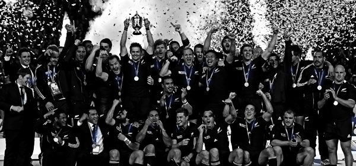

ALL BLACKS
FINAL DEL MUNDIAL · 2011
FOTO: J.-F. BEAUSÉJOUR · CC BY 2.0 (MOD.)
PORTADA Y ESCOBA: RECREACIÓN · FOTO: J.-F. BEAUSÉJOUR (CC BY 2.0), MODIFICADA
NUEVA ZELANDA · ALL BLACKS
WELLINGTON · 2011FOTO: NATURAL-HEART / JO CAIRD · CC BY-SA 2.0 (MOD.)
RICHIE McCAW
ALL BLACKS
FOTO: PSEUDOPANAX · DOMINIO PÚBLICO (MOD.)
VESTUARIO Y FICHAS: RECREACIÓN · FOTOS: NATURAL-HEART/JO CAIRD (CC BY-SA 2.0) Y PSEUDOPANAX (DOMINIO PÚBLICO), MODIFICADAS
VETERANOS
FICHAS Y SELLO: RECREACIÓN

FINAL 2011 · EDEN PARKFOTO: J.-F. BEAUSÉJOUR · CC BY 2.0 (MOD.)
FINAL 2015 · AUSTRALIA
34-17
×2
MARCADORES: NZHISTORY
Fotos: Jean-François Beauséjour (CC BY 2.0), Natural-Heart/Jo Caird (CC BY-SA 2.0) y Pseudopanax (dominio público), modificadas, vía Wikimedia Commons.
Escoba, vestuario y fichas: recreación.